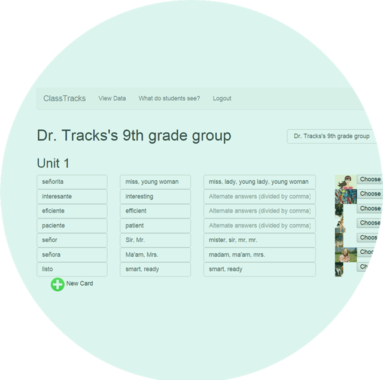
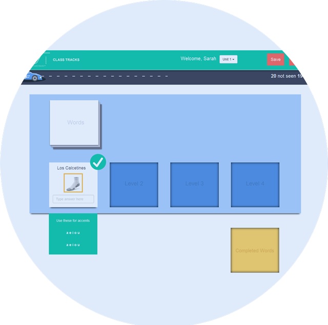

Only 500 teachers will be able to participate in our beta launch.

Customize your vocabulary lists – with alternate acceptable answers, visuals, and audio. Then assign units to students.

Students practice assigned vocabulary with an engaging, gamified interface. ClassTracks keeps track of student progress, adapts to their needs, and gives immediate, constructive feedback.
Get instant, actionable data on each student’s progress and make data-driven decisions to plan your next lesson.
At ClassTracks we understand that to master a new language, students need more opportunities to practice authentic communication. As foreign language teachers, we were frustrated with the amount of time we had to spend drilling with our students - a necessary evil, but an evil nonetheless! We set out to create a tool that would help students master the fundamentals more efficiently so that we could spend our time facilitating speaking, listening, reading and writing in the target language instead of drilling. We believe that with ClassTracks and a great teacher, every student can learn to communicate in a new language!